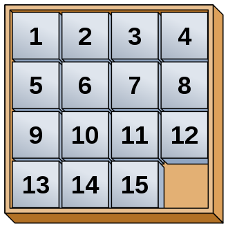
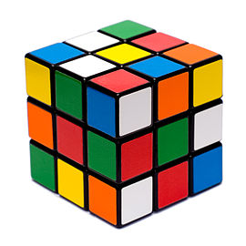

Vous êtes sur la page du projet du bloc 5 pour le DIU EIL organisé à l'Université de Polynésie-Française en Mars 2020
Réalisé par
CHIU Didier et
VAZ-PINTO Nicolas dans le cadre de
l'évaluation encadrée par
Jean-Marc VINCENT (Université Grenoble-Alpes)
Le projet est à destination des élèves de Terminale NSI et est centré autour du jeu du taquin
Le taquin est un jeu solitaire en forme de damier créé vers 18701 aux États-Unis.
Sa théorie mathématique a été publiée par l'American Journal of mathematics pure and applied en 1879.
En 1891, son invention fut revendiquée par Sam Loyd, au moment où le jeu connaissait un engouement considérable, tant aux États-Unis qu'en Europe.
Il est composé de 15 petits carreaux numérotés de 1 à 15 qui glissent dans un cadre prévu pour 16. 
Il consiste à remettre dans l'ordre les 15 carreaux à partir d'une configuration initiale quelconque.
Le principe a été étendu à toutes sortes d'autres jeux. La plupart sont à base de blocs rectangulaires plutôt que carrés,

mais le but est toujours de disposer les blocs d'une façon déterminée par un nombre minimal de mouvements.
Le Rubik's Cube est aujourd'hui considéré comme l'un des « descendants » du taquin.
Source :
Wikipedia